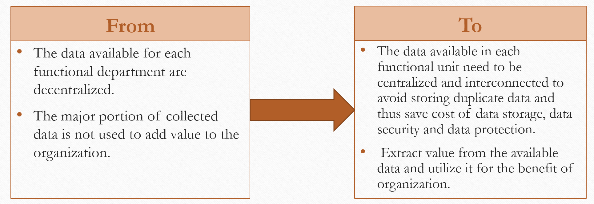

Strategic Plan
Strategic Management and Practice
Preethy Manohar
Capella University
Information Technology Strategic Plan for "X"
- Incorporate data analytics to process available big data to enhance the recruitment, retention and training process in "X".
VISION
- The vision of the strategy is to use data analytics to enhance the recruitment, retention and training process.
Vision ..
- The big data collected from different sources can be processed to convert into valuable information to perform recruitment, retention and training in improved way.
- The available data associated with the candidates can be processed using analytics to filter the candidates based on the specific requirements for the job.
Vision..
- The data analytics process can derive correlations, market trend and uncover hidden patterns to support employee retention and propose training to both staff and customers of "X"
-
The data analytics process can derive correlations, market trend and uncover hidden patterns to support employee retention and propose training to both staff and customers of "X".
MISSION
-
To provide a better technology system and services for recruiting and training, convert the available information collected from different sources to valuable information using data analytics.
Mission
-
The data analytics process can derive correlations, market trend and uncover hidden patterns to support employee retention and propose training to both staff and customers of 'X'.
-
The available data associated with the candidates can be processed using analytics to filter the candidates based on the specific requirements for the job and increase efficiency.
Transformation Required for 'X'

SWOT Analysis
-
Note:
Strength Weakness Opportunities Threat (SWOT) is one of the most basic techniques for analyzing industry and firm condition. According to Roumboutsos and Chiara (2010), SWOT analysis is a popular and excellent strategic management tool applied to organizational assessments for strategic planning.
GOAL
- The goal of the strategy is to create value out of the big data collected by the organization and increase the efficiency of the systems used for recruiting, retention and training with the processed data.
References
- Dasgupta, M., Gupta, R. K., & Sahay, A. (2011). Linking technological innovation, technology strategy and organizational factors: A review. Global Business Review, 12(2), 257-277.
-
Roumboutsos, A., & Chiara, N. (2010). A strategic partnering framework analysis methodology for public-private partnerships. Journal of Financial Management of Property and Construction, 15(3), 235-246.
-
Worley, C. G., & Lawler, E. E. (2009). Building a change capability at Capital One Financial. Organizational Dynamics, 38(4), 245-251. doi:10.1016/j.orgdyn.2009.02.004